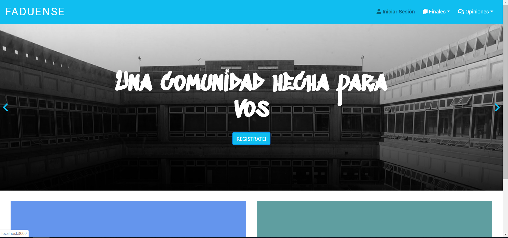
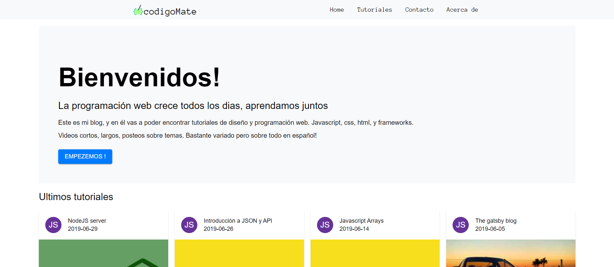
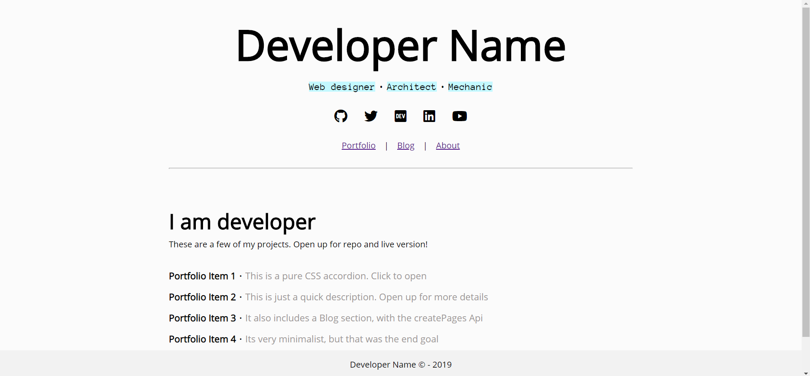
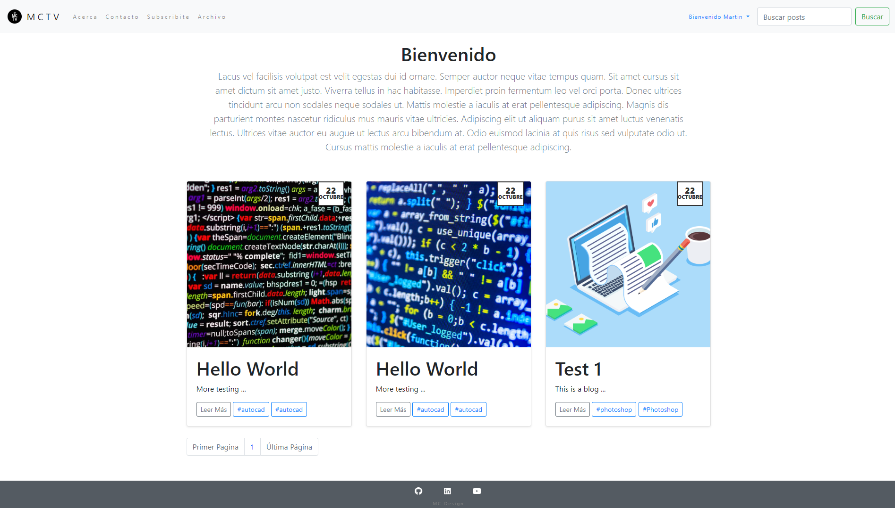
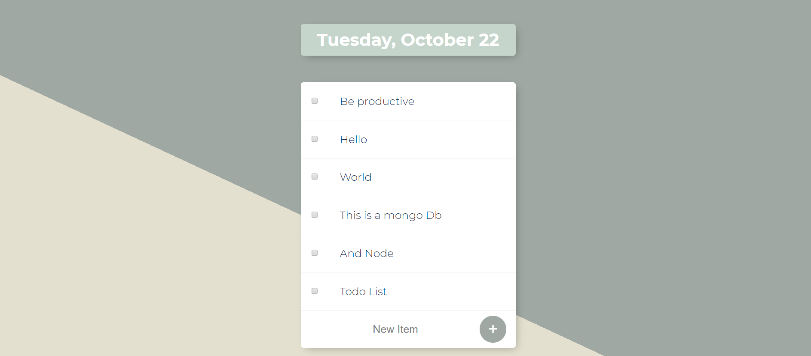
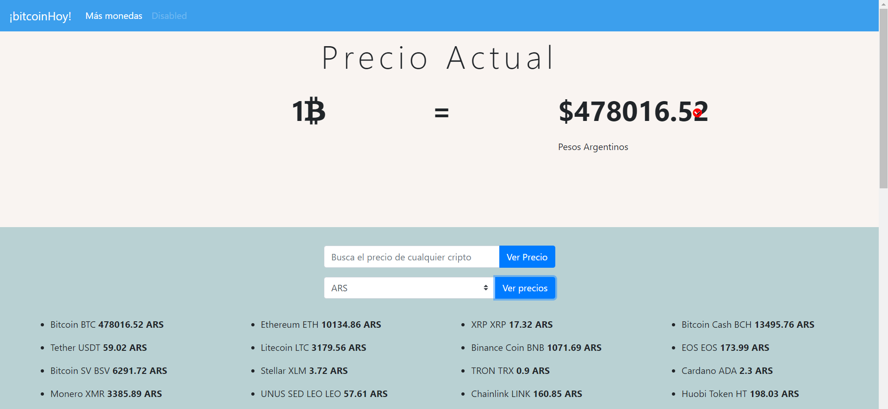

Me gusta programar
Estos son algunos de los proyectos realizé por ahora. Mucho Javascript, algo de css. Fascinado por React.
Como no hay ninguna pagina funcionando para subir examenes de las carreras de la fadu, decidi crear una web app para que los alumnos puedan subirlos y que queden organizados. Es basicamente una API en NODE la cual se relaciona con un front end de react. La api escribe a una Base de datos de Mongo. Tiene AUTH con passport, y 0Auth con google. 80% completa.Github Repo
Para probar la interfaz de Gatsby, y ver como se diferenciaba o como se asemejaba con React, decidi crear un simple blog de tutoriales, donde tengo un lugar para explayarme sobre las particularidades que me interesaron de la programación. No hay mejor forma para aprender que explicando, y eso es lo que apunto con el blog y canal de ytGithub RepoCheck it live
Mientras desarrollaba la web de faduense, decidi tomarme un tiempo para volver a Gatsby. Cree este Starter, que basicamente es un Portfolio minimalista, con el agregado de un Blog. Cada item del portfolio se pone en un array de JS, y a partir de un map se generan estos items automaticamente. También cuenta con una sección about.Github RepoCheck it live
Hecho con un backend de node, el front end es simple HTML, con templating en EJS, sumado a Bootstrap 4. Diseño responsive. Las caracteristicas principales que implemente son Autorización de usuarios con Passport, mongoose para el CRUD, pagination para los posts. Función de Archivo, función de filtro por tags y función de busqueda por palabras.Github RepoCheck it live
Hecha con un backend de node, el front end es simple HTML con Bootstrap 4. Interactua con una base mongoDB Atlas. De esa manera demostramos simplemente el CRUD con mongo, a partir de una interfaz simpleGithub RepoCheck it live
Node JS puro, y el front end muy simple HTML con Bootstrap 4. Interactua con la API de un sitio de BITCOIN usando calls de ajax, con promesas. Podria mejorarse usando async await.Github RepoCheck it live